Префектура Хоккайдо · Хигасикава · мебель и ремёсла
Хигасикава: город на Хоккайдо, где каждому новорождённому дарят деревянный стул
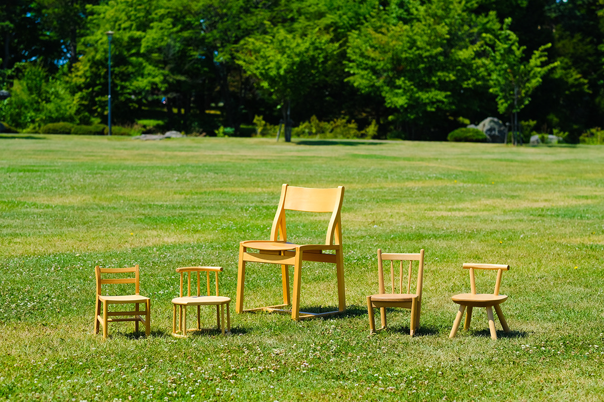
Хигасикава лежит в самом центре Хоккайдо, в десяти минутах езды от аэропорта Асахикавы. В городке живёт около 8400 человек, а мебельных и ремесленных мастерских в нём больше тридцати.
Город
Рис, вода и вид на Асахидакэ
Хигасикава граничит с Асахикавой, вторым по величине городом Хоккайдо. Железной дороги и национального шоссе здесь нет, вокруг широкие рисовые поля, и на первый взгляд это обычный сельский городок. Но население его 25 лет подряд понемногу росло: в феврале 2021 года здесь жили 8445 человек, и примерно половина из них переехала из других мест. А ещё в городе прибавилось кафе и ресторанов, и это оживило его.
Часть города входит в национальный парк Тайсэцудзан, где стоит Асахидакэ, самая высокая гора Хоккайдо. Подземные воды с гор здесь так обильны, что водопровода в Хигасикаве нет вовсе: все дома берут воду из скважин. На этой воде растёт и местный рис, который получил высшую оценку в национальном рейтинге вкуса риса.
«Асахидакэ видна из любой точки города, и это она даёт нам воду и рис. Наверное, поэтому здесь так берегут горы, леса и воду»
сотрудник мэрии Хигасикавы
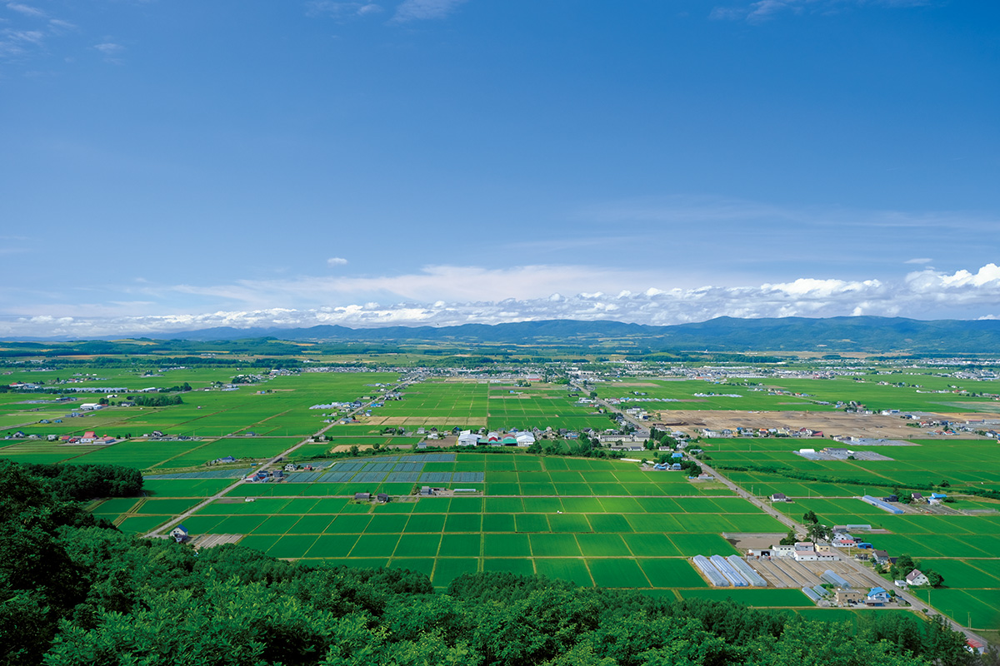
Смотровая башня Китоуси
- Адрес
- префектура Хоккайдо, уезд Камикава, Хигасикава, Ниси-4-го Кита, 46
- Часы работы
- 9:00–17:00
- Выходные
- с ноября до «Золотой недели» (конец апреля, начало мая)
Традиция
Стул, который ждёт ребёнка
Хигасикава известна прежде всего деревом. Город производит около 30% «асахикавской мебели», которую делают из хорошей древесины Хоккайдо и ценят за красивый дизайн. Поэтому с 2006 года каждому ребёнку, родившемуся в городе, дарят стул, сделанный в местной мастерской. Программу «Твой стул» придумал университет Асахикавы, а Хигасикава к ней присоединилась: каждый год выбирают новую модель, и её делают в мастерских асахикавской мебели.
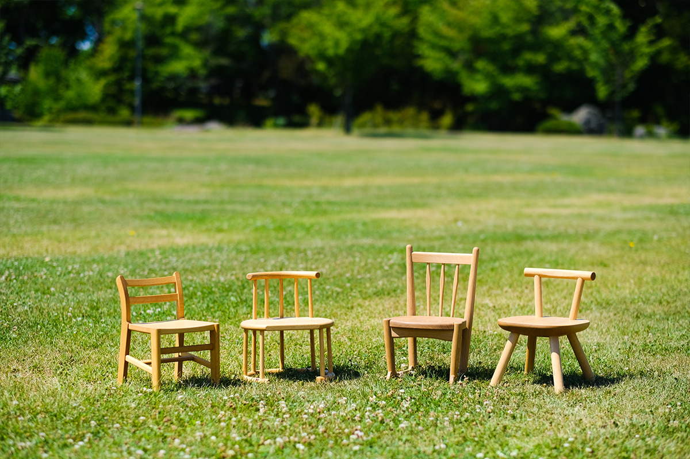
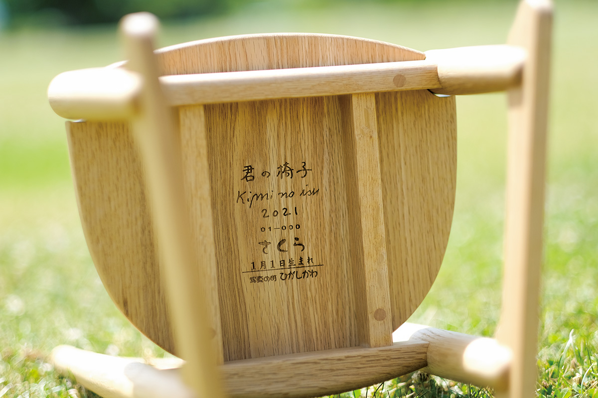
На этом стулья не заканчиваются. В начальной школе стул выбирают из пяти размеров, по росту, а при поступлении в среднюю школу каждому вручают именной «Стул для учёбы».
«Стул сопровождает человека всю жизнь, от младенчества до старости, и выдерживает с ним и радость, и горе. Наши дети растут рядом с тёплым деревянным стулом»
глава города Хигасикава
«Так дети и взрослые учатся долго и бережно пользоваться местными вещами»
сотрудник мэрии Хигасикавы
Архитектор
Кэнго Кума и «День стула»
Город объявил 14 апреля «Днём стула»: по-японски эту дату можно прочитать как «хороший стул». По словам главы города, в этот день стоит поблагодарить свою мебель, выбрать себе стул или подарить его тому, кому вы благодарны.
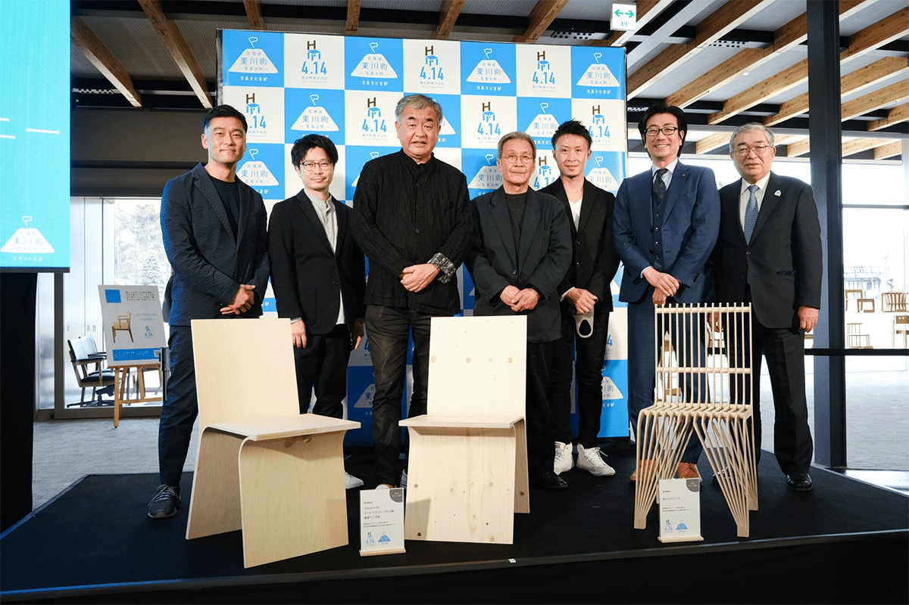
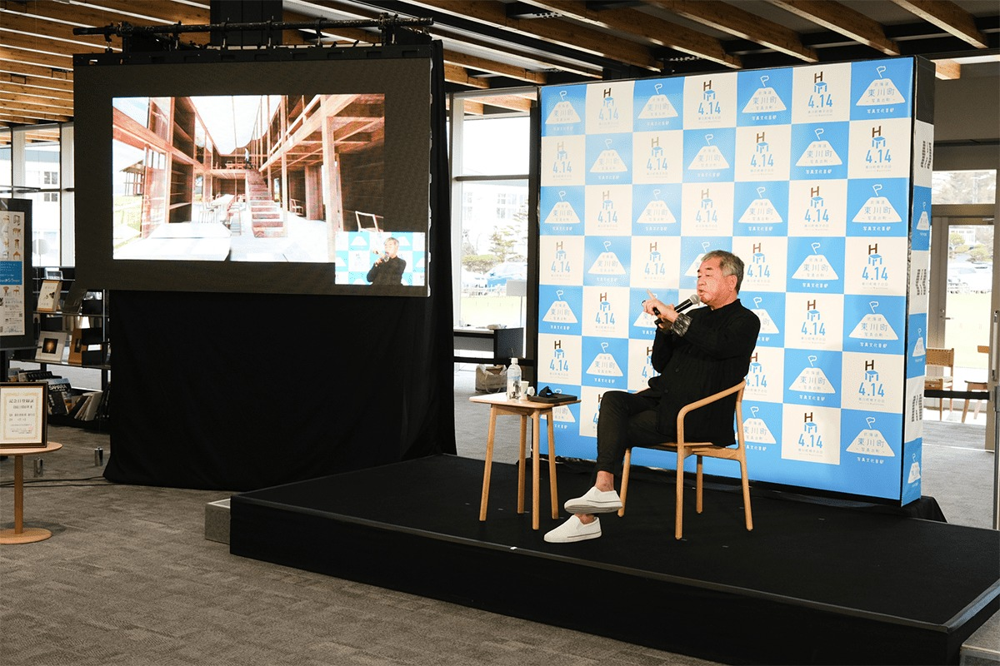
На первую церемонию 14 апреля 2021 года в городской комплекс «Сэнтопюа II» приехал Кэнго Кума, архитектор с мировым именем, автор Национального стадиона для Олимпиады в Токио. В стадионе много дерева, собранного во всех 47 префектурах Японии, и он стал символом его идеи: от бетона к дереву, к зданиям, открытым миру и созвучным природе.
«Пандемия заставила пересмотреть ценности, которые держались на концентрации в больших городах. Начинается эпоха рассредоточения. И в производстве мир поворачивает от массового выпуска к вещам, сделанным руками. Хигасикава может стать символом этого нового движения»
Кэнго Кума
На церемонии показали стул, который Кума придумал для города. Он хотел собрать стул из параллельных реек, как собирают жалюзи на фасадах зданий. Архитектор признался, что для стула это непростая задача, но мастера Хигасикавы, по его словам, владеют техникой мирового уровня.
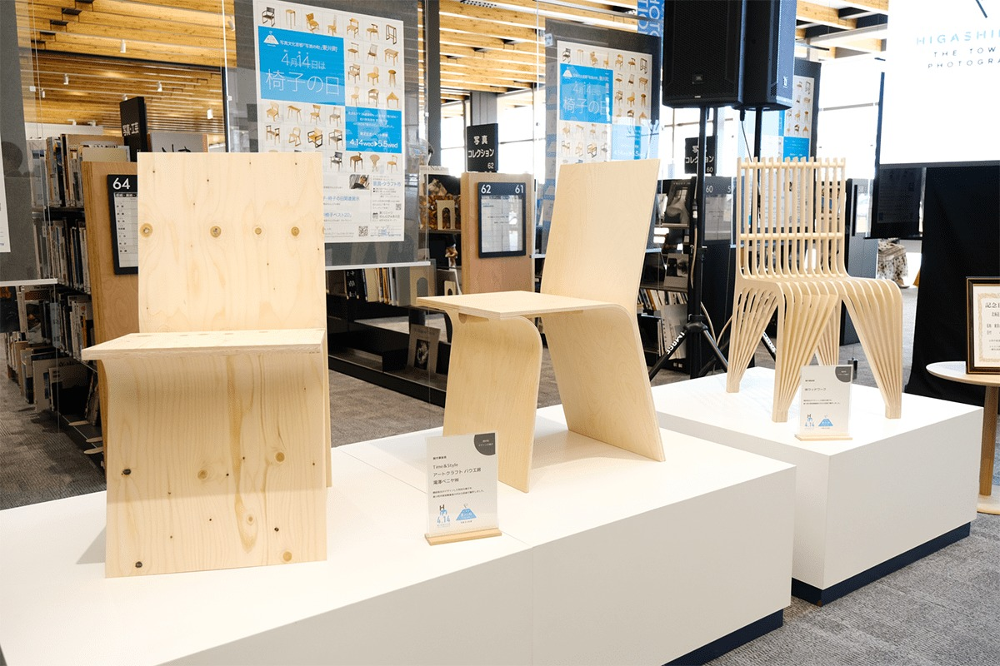
Стул делали в местной мастерской WOOD WORK. Её мастер рассказал, что дизайн Кумы не был похож ни на один стул, который ему доводилось делать: сначала нужно было понять, можно ли вообще воплотить его в дереве, а потом добиться прочности, не нарушив формы. Мастер другой мастерской добавил, что эпоха массового производства уходит и начинается время «мебели для вас», и проект Кумы придал ему уверенности.
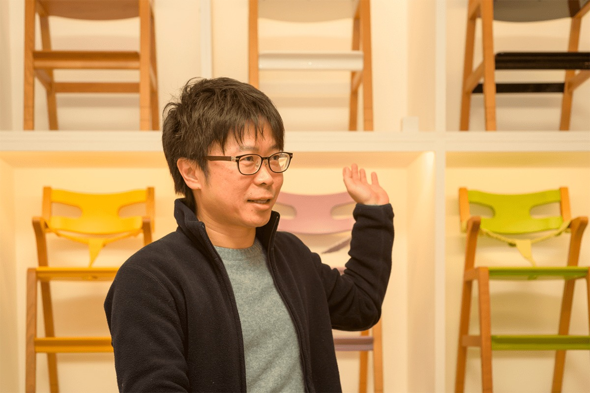
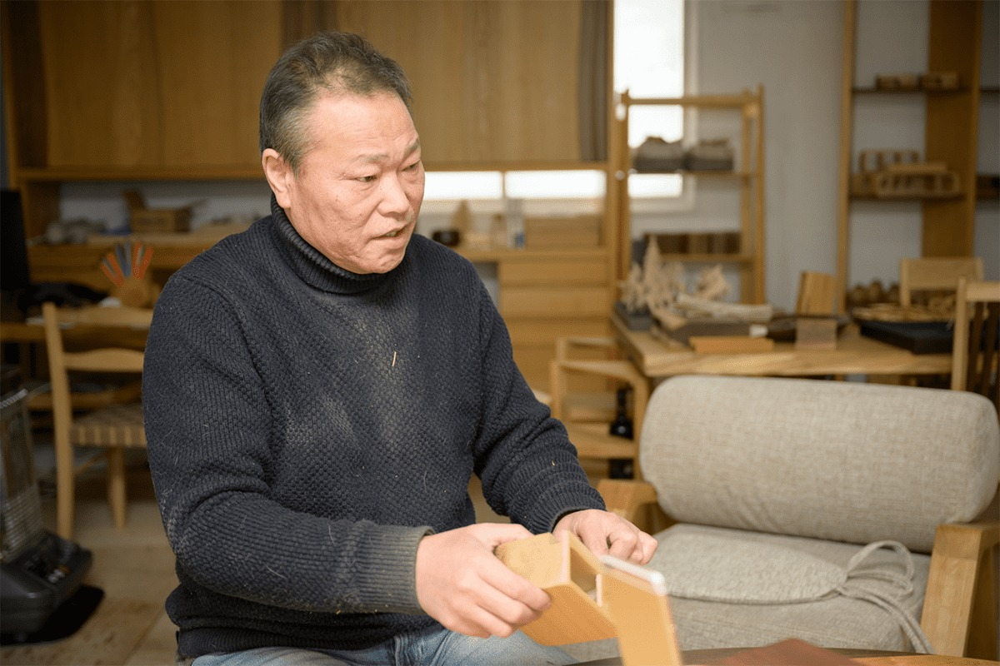
В тот же день подвели итоги первого этапа конкурса дизайна «Кэнго Кума и Хигасикава», куда принимали деревянные стулья авторов до 30 лет. Пришло 834 работы из 36 стран и регионов. Кума надеялся увидеть мебель, которая выходит за привычные рамки: после пандемии, считал он, мебель станет важнее как связь между человеком и средой.
До 5 мая 2021 года стул Кумы показывали в «Сэнтопюа II», а в галерее «Сэнтопюа I» шла выставка 20 знаменитых стульев мира из коллекции Оды. Это собрание, которое исследователь стульев Норицугу Ода изучал и пополнял много лет. Тогда же город объявил о совместных планах с Кумой: открыть в Хигасикаве филиал его бюро и построить музей дизайна.
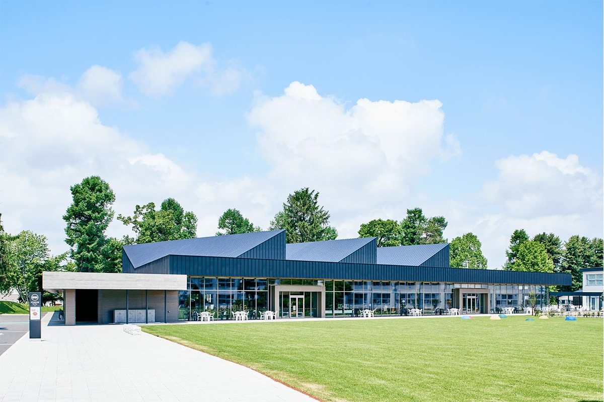
Комплекс «Сэнтопюа I и II»
- Адрес
- префектура Хоккайдо, уезд Камикава, Хигасикава, Кита-мати, 1-1-1
Мастерская
«Кита-но сумаи сэккэйся»: мебель на сто лет
Чтобы долго пользоваться вещью, нужно выбрать вещь, которая долго прослужит. Мебель, которой хватит на сто лет вперёд, делает в Хигасикаве компания «Кита-но сумаи сэккэйся», основанная в 1986 году. Мастерская заняла здание закрытой начальной школы 1928 года постройки: старое здание и лес на участке отремонтировали и восстановили.
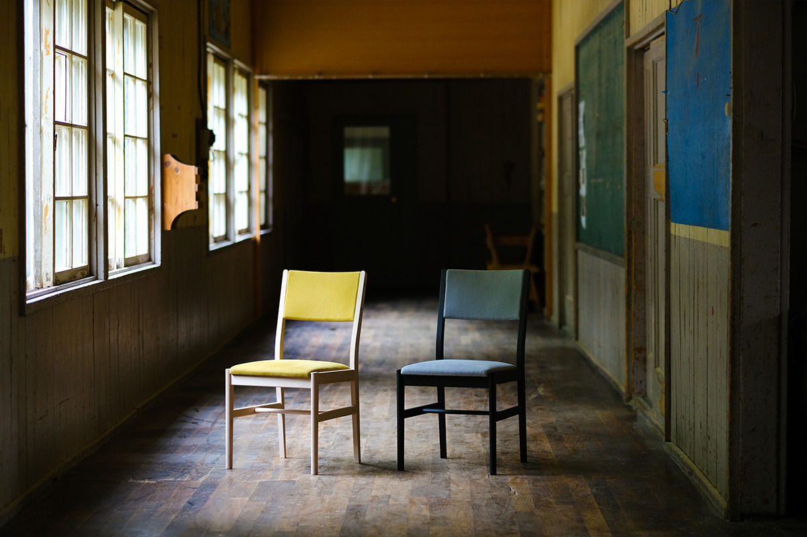
Всё делают из древесины Хоккайдо без антисептиков, а отделывают натуральными красками и материалами, которые по возможности могут вернуться в землю. Каждую вещь, как правило, от начала до конца делает один мастер.
«Мы живём внутри природы, нас пустили сюда пожить. Поэтому мы обязаны не нагружать Землю»
глава компании
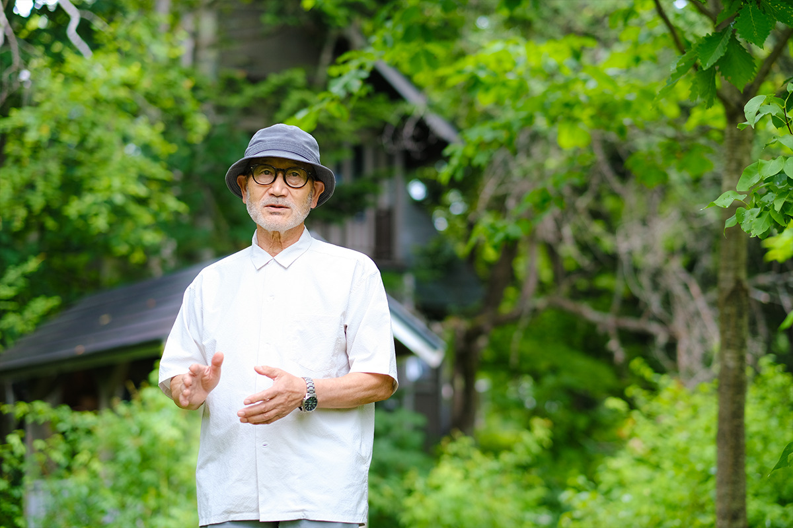
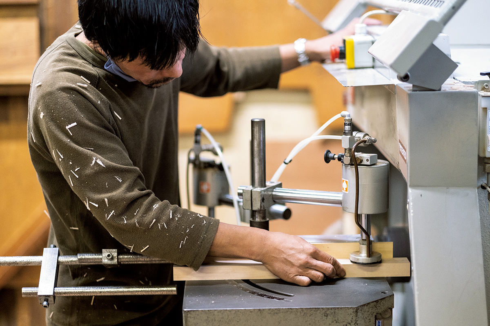
Эту идею воплощает серия сборной мебели LIM из массива клёна и дуба Хоккайдо. Мастера вытачивают детали и отправляют их покупателю в разобранном виде, а собирает он сам, шестигранным ключом и инструментами из комплекта. Так на доставку уходит в пять раз меньше энергии, чем раньше, а вещь, собранная своими руками, становится роднее. Время сборки тоже остаётся в памяти.
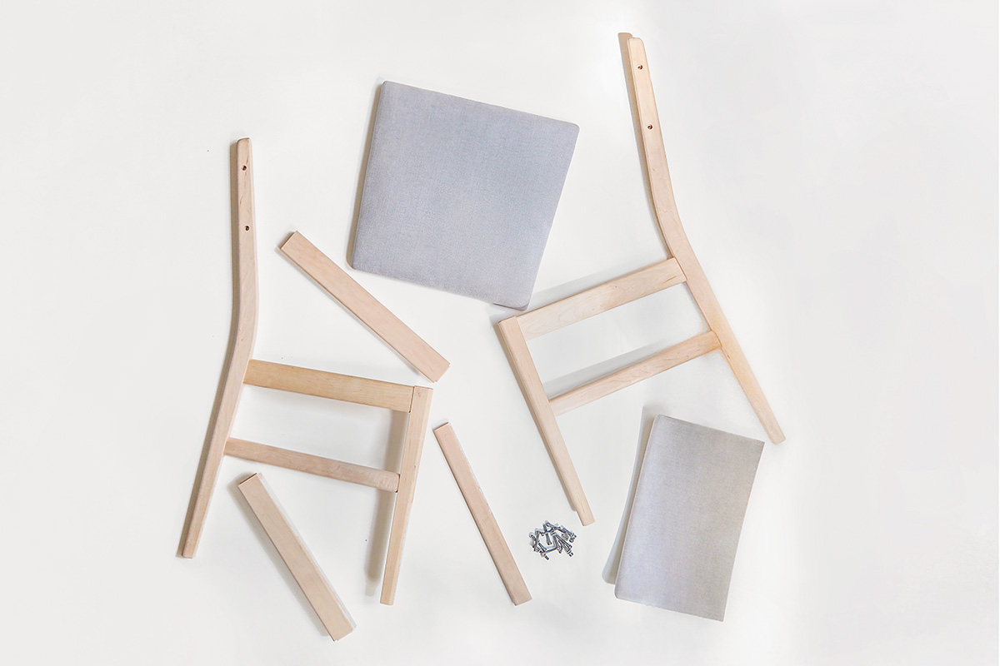
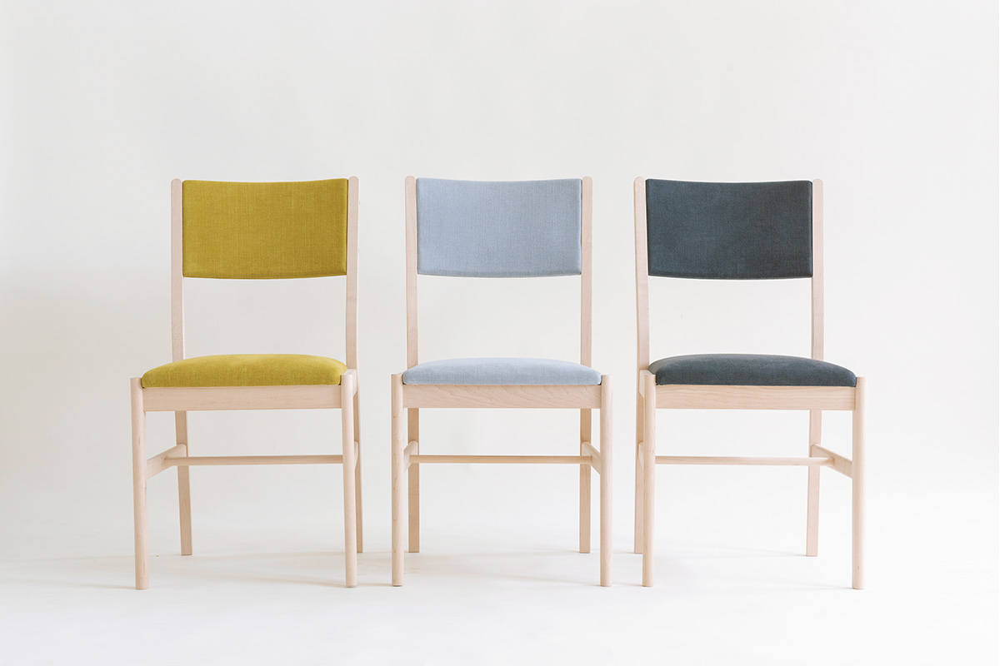
Рядом с шоурумом работают кафе и пекарня с магазином продуктов.
«Кита-но сумаи сэккэйся»
- Адрес
- префектура Хоккайдо, уезд Камикава, Хигасикава, Хигаси-7-го Кита-7-сэн
- Телефон
- +81 166-82-4556
- Часы работы
- шоурум, пекарня и магазин продуктов 10:00–18:00; кафе 11:00–17:00 (еда до 14:00, десерты и напитки до 16:30)
- Выходные
- среда
Акционеры
Как стать «акционером» города
Поддержать Хигасикаву можно и издалека. Для этого в городе придумали «систему акционеров Хигасикавы»: жертвователь сам выбирает городской проект, в который хочет вложиться. Налоговый вычет такой же, как при обычном пожертвовании родному краю, но город, по словам мэрии, хочет большего, чем просто деньги в бюджет: вместе с «акционерами» создавать то, что нужно обществу. Проекты делятся на три группы: будущее города, охрана природы и использование местных ресурсов.
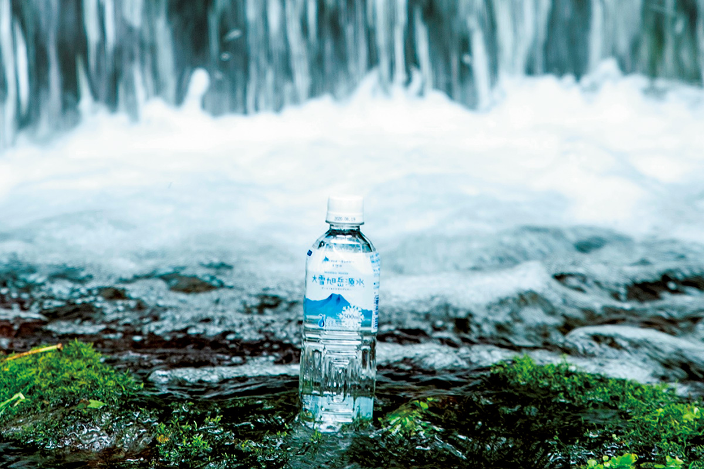
«Акционер» получает не только подарок в ответ, но и звание «особого жителя»: городские учреждения доступны ему по особым ценам, а в городском жилье для гостей можно бесплатно провести две ночи. Среди проектов, которые можно было поддержать в 2021 году, были «Фотостолица», город фотографии, строительство музея дизайна, школа сноуборда для детей вместе со спортсменкой-сноубордисткой и поддержка сельского хозяйства. Мэрия видит в системе не просто пожертвование, а повод приехать в Хигасикаву.
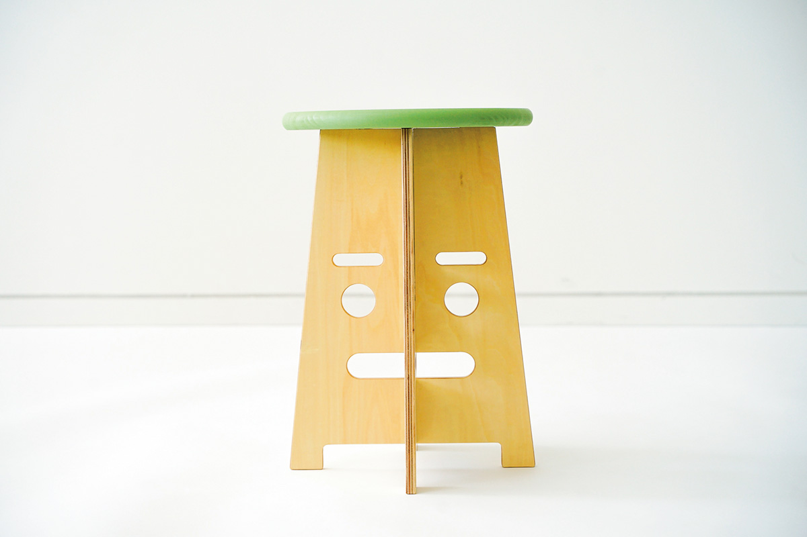
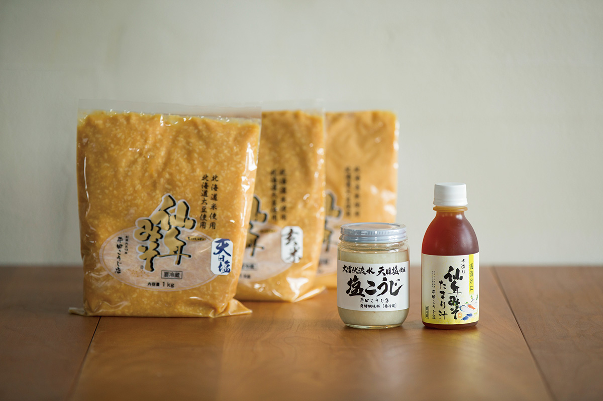
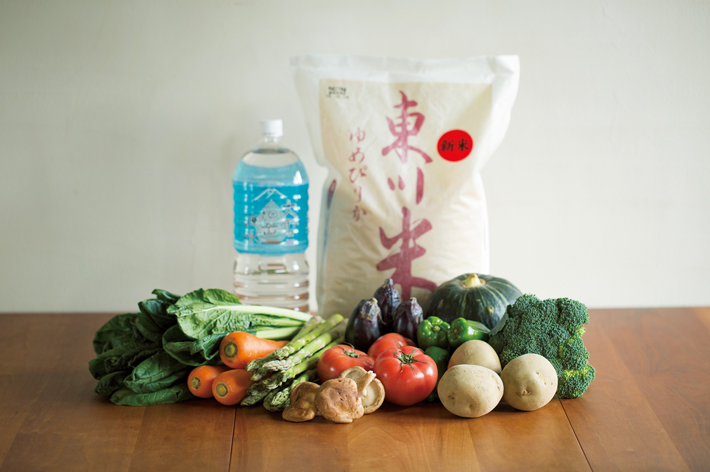
«Станьте акционером Хигасикавы и двигайте эти проекты вместе с нами»
сотрудник мэрии Хигасикавы
Фото: Тацуо Иидзука.